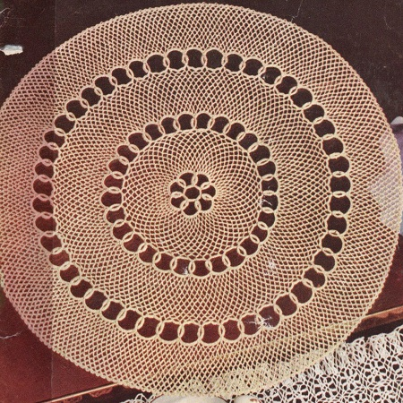

Lacy Links Doily Pattern
MATERIALS:
J. & P. COATS BIG BALL BEST SIX CORD MERCERIZED CROCHET, Art. A.104, Size 50: 2 balls of Ecru.
Milwards Steel Crochet Hook NO. 12.
Doily measures 15 inches in diameter
Starting at center: Ch 25. Join with sl st to form ring.
1st rnd: 56 sc in ring. Join.
2nd rnd: Ch 5, dtr at base of ch-5, 10 sc over dtr, sl st at base of ch-5, 10 sc over ch-5, join; *ch 14, skip 7 sc, 2 dtr in next sc, 10 sc over 2nd dtr, sl st at base of dtr, 10 sc over first dtr, join. Repeat from * around, joining last ch-14 to first ring made.
3rd rnd: 26 sc in each ch-14 loop around. Join.
4th rnd: Sl st in first 3 sc of next scallop, sc in same place as last sl st, * (ch 5, skip 2 sc, sc in next sc) 7 times; ch 5, skip first 2 sc of next scallop, sc in next sc. Repeat from * around, ending with ch 2, dc in first sc.
5th to 15th rnds: * Ch 5, sc in next loop. Repeat from *around, ending with ch 2, dc in dc. At end of 15th rnd, ch 5, sl st in dc.
16th rnd: 5 sc in each loop around. Join and break off.
17th rnd: Attach thread to center sc of any ch-5 loop directly over a large loop on 2nd rnd, ch 5, dtr at base of ch-5, * 10 sc over dtr, sl st at base of ch-5, 10 sc over ch-5, join; ch 14, skip 9 sc, 2 dtr in next sc, 10 sc over 2nd dtr, sl st at base of dtr, 10 sc over first dtr, join. Repeat from * around. Join.
18th rnd: 25 sc in each ch-14 loop around. Join.
19th rnd: Sl st in next 2 sc, * (sc in next sc, ch 5, skip 3 sc) 5 times; insert hook in next sc and draw loop through, skip first 2 sc at next scallop, insert hook in next sc and draw loop through, thread over and draw through all loops on hook, ch 5. Repeat from * around, ending with ch 2, dc in first sc.
20th to 30th rnds: Repeat 5th rnd.
31st to 45th rnds: Repeat 16th to 30th rnds incl, but skip 14 sc instead of 9 sc on 32nd rnd.
46th rnd: *Ch 3, sc in next loop. Repeat from * around. Join.
47th rnd: In each loop around, make sc, ch 3 and sc. Join and break off. Starch lightly and press.
HOME